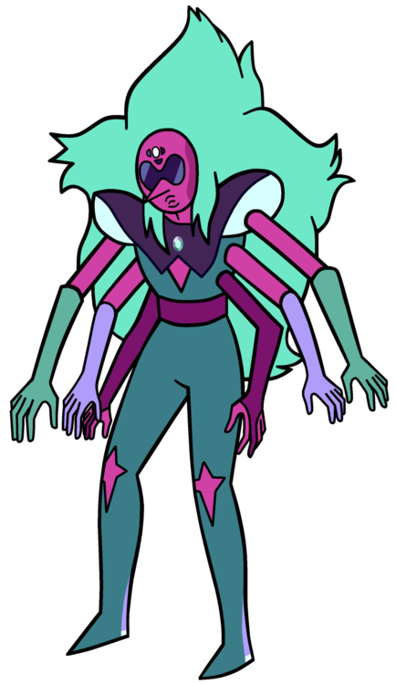

High Performance JavaScript
Plínio Balduino
JS Experience 2017
Plínio Balduino

Browsers

Browsers

UI Thread
Your browser is (mostly) single threaded

UI Thread

UI Thread
Your code affects the user experience

UI Thread
Move to Event Loop

UI Thread
Beware the events

UI Thread
Move to CSS Animations
Repaint / Reflow
UI Thread
Move to CSS Animations
Use transform where possible
The DOM is expensive
Remove element, change, put it back
Use DocumentFragment
The DOM is expensive
PLEASE NO!
var div = document.getElementById('my-div');
div.appendChild(obj1);
div.appendChild(obj2);
div.appendChild(obj3);
Use DocumentFragment
Reduces reflow
var frag = document.createDocumentFragment();
var div = document.getElementById('my-div');
frag.appendChild(obj1);
frag.appendChild(obj2);
frag.appendChild(obj3);
div.appendChild(frag);
Group DOM changes
AWFUL
$('#dialog-window')
.width(600)
.height(400)
.css('position': 'absolute')
.css('top', '200px')
.css('left', '200px');
Group DOM changes
Good
$('#dialog-window').css({
width: '600px',
height: '400px',
position: 'absolute',
top: '200px',
left: '200px'
);
Group DOM changes
Best
$('#dialog-window')
.addClass('mask-aligned-window');
Consider using web workers
Operate in another thread
Don't modify DOM directly
Can handle long processes
It's not a solid standard
Loading the code

Loading the code
Always the UI Thread
<body>
<p>Some content</p>
<script src="foo.js"></script>
<p>More content</p>
</body>
Combine, minify and gzip

Put the code at the bottom
It loads after the UI update
<body>
<p>Some content</p>
<p>More content</p>
</body>
<script src="foo.js"></script>
Dynamic loading
Good for older browsers
var script = document.createElement('script');
script.type = 'text/javascript';
script.src = 'foo.js';
document.appendChild(script);
Defer loading
They download but don't execute immediately
<body>
<p>Some content</p>
<script defer src="foo.js"></script>
<p>More content</p>
</body>
Async loading
They download then execute
<body>
<p>Some content</p>
<script async src="foo.js"></script>
<p>More content</p>
</body>
Is it awesone, isn't?

Is your code fast?

Scope
ALWAYS use the smaller scope
function potato() {
var age = 42;
// more code
}
Cache
Cache attributes and properties
// BAD
var i;
for(i = 0; i < list.length; i++) {
// GOOD
var i;
var len = list.length;
for(i = 0; i < len; i++) {
Cache
Cache attributes and properties
// BAD
var i;
for(i = 0; i < list.length; i++) {
// GOOD
for(var i = 0, len = list.length; i < len; i++) {
Don't use eval
The expression is evaluated twice
// BAD
eval('process(' + value + ')');
// GOOD
process(value);
Avoid closures
Closures are cool, but expensive
var message = 'OH YEAH!';
setTimeout(function() {
console.log(message);
});
Avoid closures
BETTER
setTimeout(function() {
var message = 'OH YEAH!';
console.log(message);
});
Avoid closures
EVEN BETTER
function showMessage() {
var message = 'OH YEAH!';
console.log(message);
}
setTimeout(showMessage);
Object creation
BAD
baz.Bar = function() {
// constructor body
this.foo = function() {
// method body
};
}
Object creation
BETTER
baz.Bar = function() {
// constructor body
};
baz.Bar.prototype.foo = function() {
// method body
};
Avoid method chaining
The lookup is expensive
// BAD
object.property.whatever = 2;
object.property.potato = 3;
// BETTER
var prop = object.property;
prop.whatever = 2;
prop.potato = 3;
Reduce comparisons
This one is tricky
var len = list.length;
// for
for(var i = 0; i < len; i++) {
process(list[i]);
}
// while
var j = 0;
do {
process(list[j]);
} while (j < len);
Reduce comparisons
Compare only once
var len = list.length;
// for
for(var i = len; i--;) {
process(list[i - 1]);
}
// while
var j = len;
do {
process(list[j - 1]);
} while (j--);
Get elements by id
Avoid slow lookups
var button = jQuery('body div.dialog > div.close-button:nth-child(2)')[0];
Get elements by id
An id is supposed to be unique
var button = document.getElementById('dialog-close-button');
Reference
https://gist.github.com/pbalduino/8817d6182d7c4dee9edca99fff0aaafb
Questions?

Thank you

/